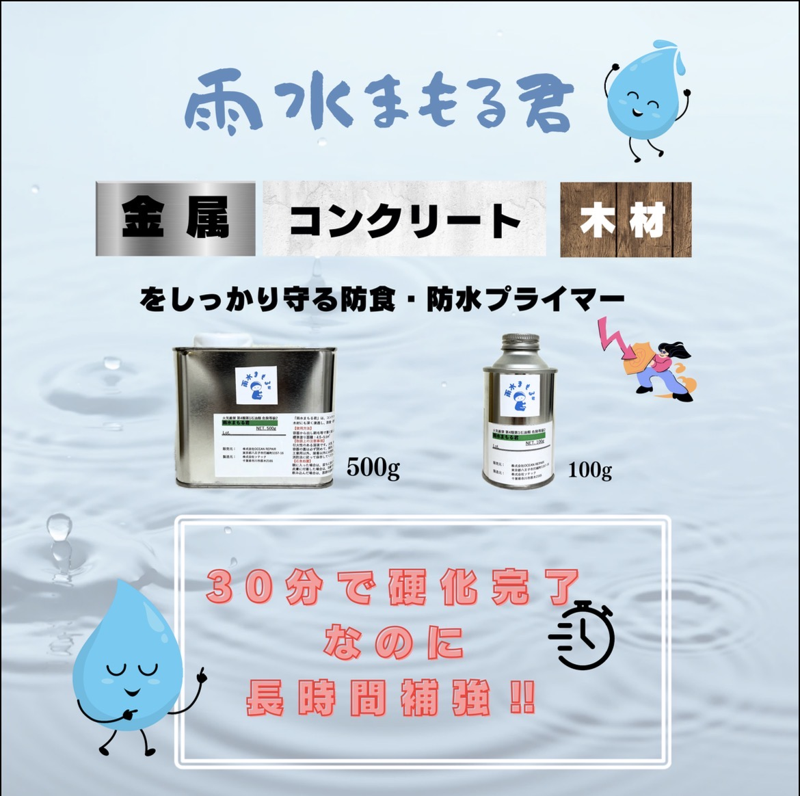
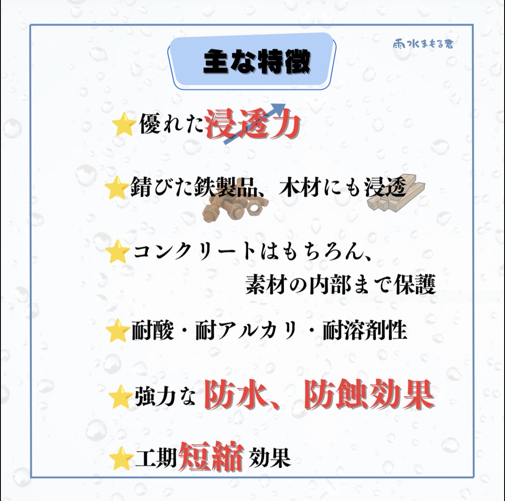
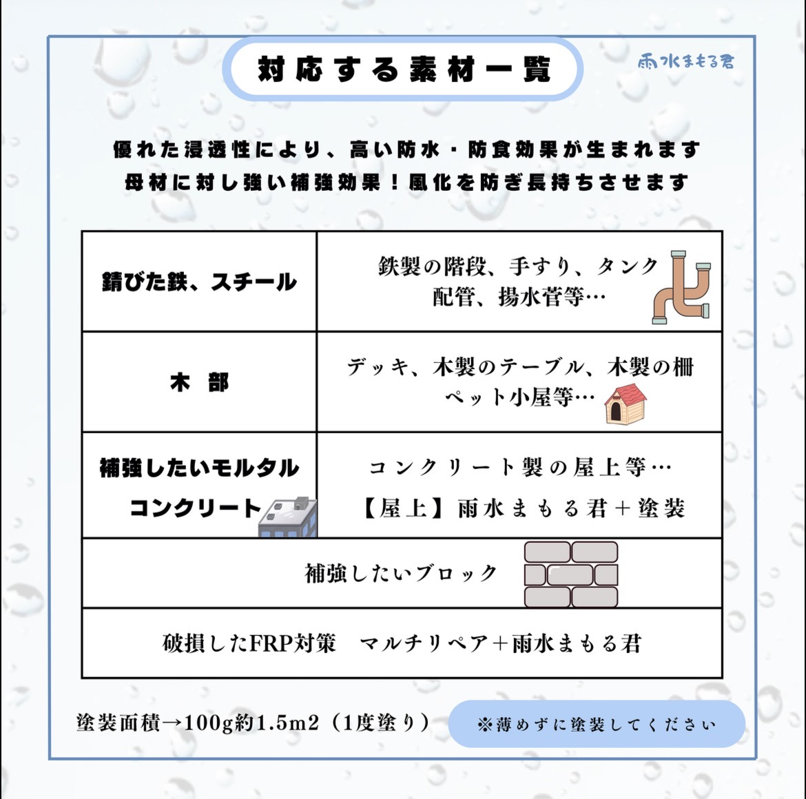
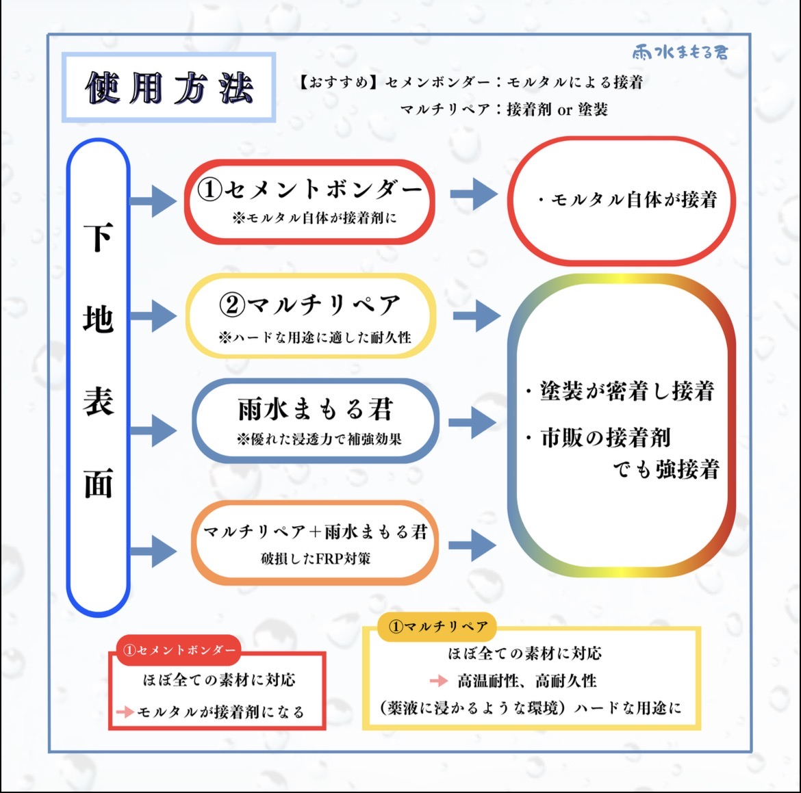

塗装や樹脂ライニングが壊れる原因の多くは「剥がれ」です。 そのため、長期間性能を維持するには 剥がれにくくすることが最も重要です。
雨水まもる君は、コンクリート表面に浸透し 強力な接着力を生み出す コンクリート専用の補強接着プライマーです。
コンクリートは微細な孔が多く、 引張強度が弱く、強アルカリ性という特徴があります。 そのためプライマーには以下の性能が必要です。
雨水まもる君はこれらすべてを備えた高性能プライマーです。
樹脂ライニングが剥がれる主な原因は、 硬く厚いライニングが接着界面にストレスをかけ、 コンクリート表層が破壊されることです。
雨水まもる君はコンクリート表層に浸透し、 表層強度を大幅に向上させることで 材料破壊による剥がれを防ぎます。
浸透によってコンクリート表層の空隙を塞ぐため、 下地からライニング層への気泡混入を抑え、 ピンホールの発生確率を低減します。
硬化が非常に早く、 塗布後約30分で次の工程へ進むことが可能です。
塗り重ねることで 重防食塗装としても使用できます。




株式会社OCEAN REPAIR
東京都八王子市打越町1157-16
E-mail: oceanrepair＠e-mail..jp
☎ 042-636-7360